The blog "Take Event APIs to where your Apigee APIs are ..." introduced an integration between the Google Apigee and Solace Platforms.
In this codelab we walk you through the steps that enable the developer experience for event APIs demonstrated in the blog.
The overall solution looks like this: 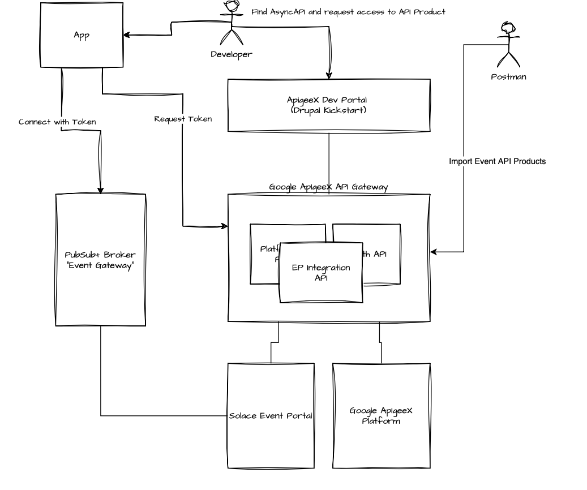
Let's look at all the components involved:
- Apigee Dev Portal: the developer portal that developer interact with to find APIs and register their apps
- App: the application that the developer creates. We simulated this app with postman in the sections above.
- PubSub+ Broker: the event broker that the event API is accessible on. As it acts similarly to an API Gateway, we could also call it an "Event Gateway".
- Google Apigee API Gateway: the API gateway hosting all the required API Proxies for the integration (more on these later)
- Solace Event Portal: the event governance platform that allows to manage Events, Event APIs an Event API Products.
- Apigee Platform: the API management back office
As you can see the interactions flow through the Apigee gateway as we chose to implement the integration completely in Apigee:
- The integration provides a REST API for Discovery of Event API Products and to subsequently import these to the Dev Portal and Apigee platform. This includes uploading AsyncAPI specs to the developer portal as well as creating Apigee API Products that represent Event API Products
- Dev Portal requests to the core Apigee platform are proxied via the gateway – this allows us to hook our integration into requests such as adding an API Product to an app or deletion of apps. So we can create and manage app registrations and access requests in Solace Event Portal – which are required for the configuration of runtime access on the "Event Gateway".
Head over to the blog to learn more if you haven't read it yet.
Solace Cloud Account & PubSub+ Broker
You need access to a Solace Cloud account - including Event Portal - and a PubSub+ Event Broker.
No problem if you haven't got that yet, simply follow step 3 in the A Solace Primer - Getting Started with Solace PubSub+ Event Broker codelab
Solace Cloud API Token
You need to supply a Solace API Token to the API Proxies you'll deploy in Apigee.
Follow the steps at API Authentication in the Solace Platform API documentation to create the token and store it in a place that you can refer to it again.
You can always regenerate the API token if it gets lost.
Apigee
Start Apigee API Gateway
If you haven't got a working Apigee environment you can go to the Apigee console and either start the free trial or use the "Setup with Defaults" option.
Create a Service Account with Full Access to Apigee APIs
In the Google Cloud Console go to Service Accounts and create a new service account, name it "Apigee-eventportal-integration", add the "Apigee API Admin" role and save it.
Apigee Developer Portal Kickstart
Set up the Developer Portal via the Kickstart solution.
When launching the Kickstart, enable HTPS connectivity: 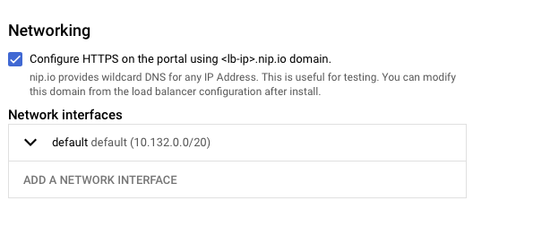
curl
REST API calls in this codelab are given as curl commands.
MQTT Client
You can use MQTT to test developer access to Event APIs on the Solace PubSub+ Broker - a suitable tool is MQTTX.
You can also use any other tool that you use to connect to Solace brokers.
Java & Maven
You will use the Apigee-deploy-maven-plugin to package API Proxies.
See the prerequisites for running the maven plugin in the README
Clone github project
- Fork the solace-Apigee-sample repo from https://github.com/solace-iot-team/solace-Apigee-sample
- Clone your fork
git clone git@github.com:<YOUR_GITHUB_USER>/solace-Apigee-sample.git
cd solace-dev-codelabs
git checkout -b <BRANCH_NAME>
Duration 0:15:00
Complete Portal Setup
When viewing your Dev Portal deployment in the Google Cloud console click "CONFIGURE YOUR SITE" to finish the Dev Portal Setup 
Remove HTTP Basic Authentication
The steps to remove HTTP Basic Authentication are described on the deployment page of the Dev Portal in the Google Cloud Console.
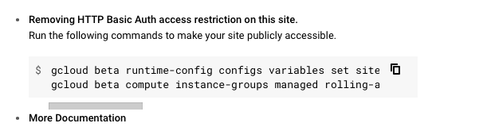
Patch AsyncAPI Support
The patch is contained in the github repo you cloned earlier in the folder asyncapi-patch.
Connect to one of the portal VMs in the Kickstart Deployment using SSH - you cna do this form within the Google Compute Engine console.
- Upload the
asyncapi.patchfile from the location given above to the home directory on one of the the Kickstart VMs - In the SSH console change the directory to
$> cd /var/www/devportal/code/web/modules/contrib/apigee_api_catalog - Then apply the patch
$> sudo patch -p1 < ~/asyncapi.patch.
In the Dev Portal admin user interface enable the "AsyncAPI" module (if not already enabled):
Point the Portal at your Apigee Gateway Host
We need to patch the Apigee Platform API so the Developer Portal URL to point to API Proxy setup. You need to amend ClientInterface.php in /var/www/devportal/code/vendor/apigee/apigee-client-php/src/.
Please replace the link to googleapis.com with a link to your Apigee API Gateway in line 57 and line 64
Example:
Original ClientInterface.php line 57-46:
public const HYBRID_ENDPOINT = 'https://apigee.googleapis.com/v1';
/**
* Default endpoint for Apigee Management API on GCP
*
* @var string
*/
public const APIGEE_ON_GCP_ENDPOINT = 'https://apigee.googleapis.com/v1';
Example of amended ClientInterface.php:
public const HYBRID_ENDPOINT = 'https://34.54.13.157.nip.io/v1';
/**
* Default endpoint for Apigee Management API on GCP
*
* @var string
*/
public const APIGEE_ON_GCP_ENDPOINT = 'https://34.54.13.157.nip.io/v1';
Enable Dev Portal REST APIs
The integration with Event Portal requires that Apigee Dev Portal REST APIs are enabled to interact with API Docs. Please follow all the steps in this guide up to and including "Create a new role and a service account".
When you follow the steps to install the Drupal patch and module:
- You can do this installation by connecting to one of the Google Compute VMs in the Kickstart deployment a
- The composer config file you need to update is at
/var/www/devportal/code/composer.json - Follow the steps documented in section 3 Option B of "Install Drupal patch and additional module" to install the
JSON:API ExtrasandHTTP Basic Authentication - Once you enabled CRUD operations on the JSON API in section 4, select the "JSON:API Extras" tab then the "Resource overrides" tab. Check that the
node--asyncapi_docresource is enabled. (see screenshot below) 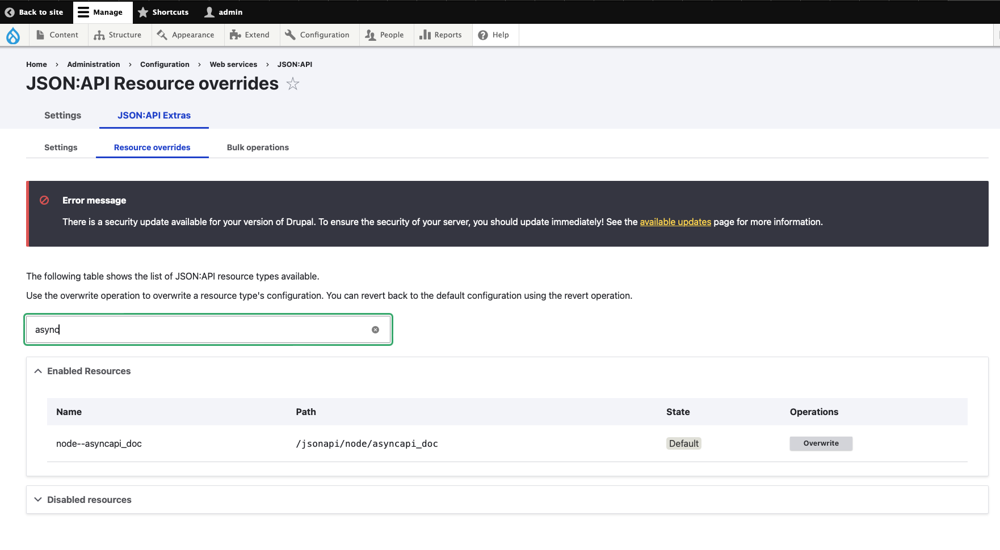
Duration 0:10:00
You can either import API Proxies from API Proxy Bundles or use the Apigee-deploy-maven-plugin to build and deploy the API Proxies.
You need to build and deploy the API proxies found in src/gateway within the repository:
src/gateway/Apigee-Platform-Proxysrc/gateway/EventPortalIntegrationsrc/gateway/hellosrc/gateway/OAuth
The hello proxy is optional, its purpose is to demonstrate use of the same access token / JWT for authn and authz across REST and Event APIs.
Package API Proxies for Manual Import using Maven
For each of the API Proxies listed above:
$> cd <CLONED_REPO_ROOT>/src/gateway/<API_PROXY_DIRECTORY>
$> mvn package
Replace < CLONED_REPO_ROOT > with the location of the cloned repo and < API_PROXY_DIRECTORY > with the directory of the API Proxy as listed in the previous section.
You'll find the zipped API Proxy Bundle for upload to Apigee in < CLONED_REPO_ROOT >/src/gateway< API_PROXY_DIRECTORY >/target
Build and deploy API Proxies using Maven
See the readme for full instructions on how to use the maven plugin for deployment to Apigee.
For each of the API Proxies listed above:
$> cd <CLONED_REPO_ROOT>/src/gateway/<API_PROXY_DIRECTORY>
$> mvn install
Replace < CLONED_REPO_ROOT > with the location of the cloned repo and < API_PROXY_DIRECTORY > with the directory of the API Proxy as listed in the previous section.
Configure the OAuth API Proxy
Generate a JWK
First generate private and public key and a JSON Web Key.
There are multiple web tools that can do this
- Let's use https://jwkset.com/generate:
- Scroll down to the "Generate a new key" section and set it up as in the screenshot below.
- Click generate and either keep the tab open or save JSON Web Key, Private Key and Public Key to separate files.
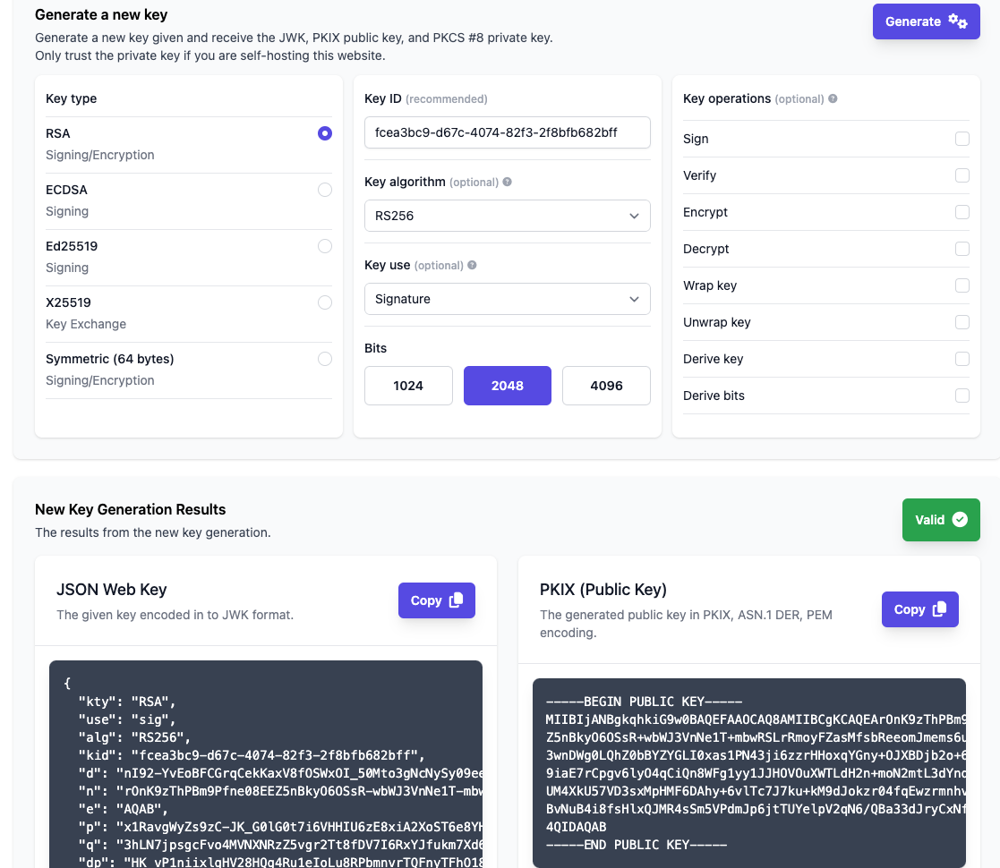
Upload keys to the OAuth API
First upload the PRIVATE_KEY that you just created:
curl --location 'https://<API_GATEWAY_HOSTNAME>/oauth/keys' \
--header 'Content-Type: text/plain' \
--data '<PRIVATE_KEY>'
Then upload the JWK:
curl --location 'https://<API_GATEWAY_HOSTNAME>/oauth/jwks' \
--header 'Content-Type: application/json' \
--data '<JWK>'
Configure the Solace Integration API Proxy
Upload Solace Cloud API Token
You have created the API Token in the "Prerequisites" section, it is referred to as API_TOKEN in the command below:
curl --location 'https://<API_GATEWAY_HOSTNAME>/ep-bootstrap/token' \
--header 'Content-Type: text/plain' \
--data '<API_TOKEN'
Configure the API with Dev Portal Connection Details
When you are importing Event API Products this API Proxy also uploads the associated AsyncAPI specs to the Apigee Dev Portal - you'll need to supply the endpoint and credentials for this connection.
curl --location 'https://<API_GATEWAY_HOSTNAME>/ep-bootstrap/devportal' \
--header 'Content-Type: application/json' \
--data '{
"host": "https://<DEV_PORTAL_HOST>",
"user": "<DEV_PORTAL_API_USER?",
"password":"<DEV_PORTAL_API_PASSWORD>"
}'
You have created a user when you configured the Dev Portal. Replace < DEV_PORTAL_API_USER > and < DEV_PORTAL_API_PASSWORD > with the user credentials.
DEV_PORTAL_HOST refers to the public host name that was assigned to your Dev Portal when you ran the Kickstart deployment.
Once you have access to Event Portal you'll need to do some initial configuration and create some assets:
- Configure a modeled event mesh and add your event broker.
- Create Schemas, Events, Event API and Event API Product in Event Portal Designer
- Alternatively, you can import an Application Domain from a file. If you do this you still need to execute the following step.
- Make the Event API Product available to API Management systems.
Configure a modeled event mesh and add your event broker
Follow the steps described here
Create Event API Products and required objects
You can skip steps if you already have created some of these objects - such as schemas, events- in Event Portal that you intend to reuse.
- Open the Event Portal Designer, see here
- Create an application domain for broker type "Solace", see here
- Create a schema, skip if you want to define simple events with primitive payloads such as string). See here. Remember to set the state of the schema version to released.
- Create an event, see here. Remember to set the state of the event version to released.
- Create an Event API , see here. Remember to set the state of the event version to released.
- Create an Event API Product, see here
Alternative: Import a Sample Application Domain
The sample domain is stored in the github repo that you have cloned. It's calles retail-demo.json and is located in the eventportal directory.
Follow the instructions to import an Application Domain into Event Portal.
Make the Event API Product available to API Management systems
Once you have an Event API Product - either imported or designed by you - you need to assign it to an environment and make it visible to APIM solutions: see Make Event API Products Publicly Available in the Solace Platform API documentation.
List Available Event API Products
Retrieve a list of importable API Products (i.e. Event API Product Plans):
curl --location 'https://<API_GATEWAY_HOSTNAME>/ep-bootstrap/eventApiProducts?where=applicationDomainId%3D%3Dgfjt1r5b8db'
Import an Event API Product Plan into Apigee
Pick an API Product from the importableApiProducts element of the response you retrieved in the previous step and use it in the command below. Set --data payload replacing < IMPORTABLE_API_PRODUCT >:
curl --location 'https://<API_GATEWAY_HOSTNAME>/ep-bootstrap/eventApiProducts' \
--header 'Content-Type: application/json' \
--data '<IMPORTABLE_API_PRODUCT>'
For example:
curl --location 'https://<API_GATEWAY_HOSTNAME>/ep-bootstrap/eventApiProducts' \
--header 'Content-Type: application/json' \
--data '{
"apiProductName": "Order Event API-default",
"planId": "u3r88l0pxk7",
"eventApiProductId": "rezt2caps5s"
}'
The blog "Take Event APIs to where your Apigee APIs are ..." walks you through the developer experience in more detail.
Find and Explore Your Event API in the Developer Portal
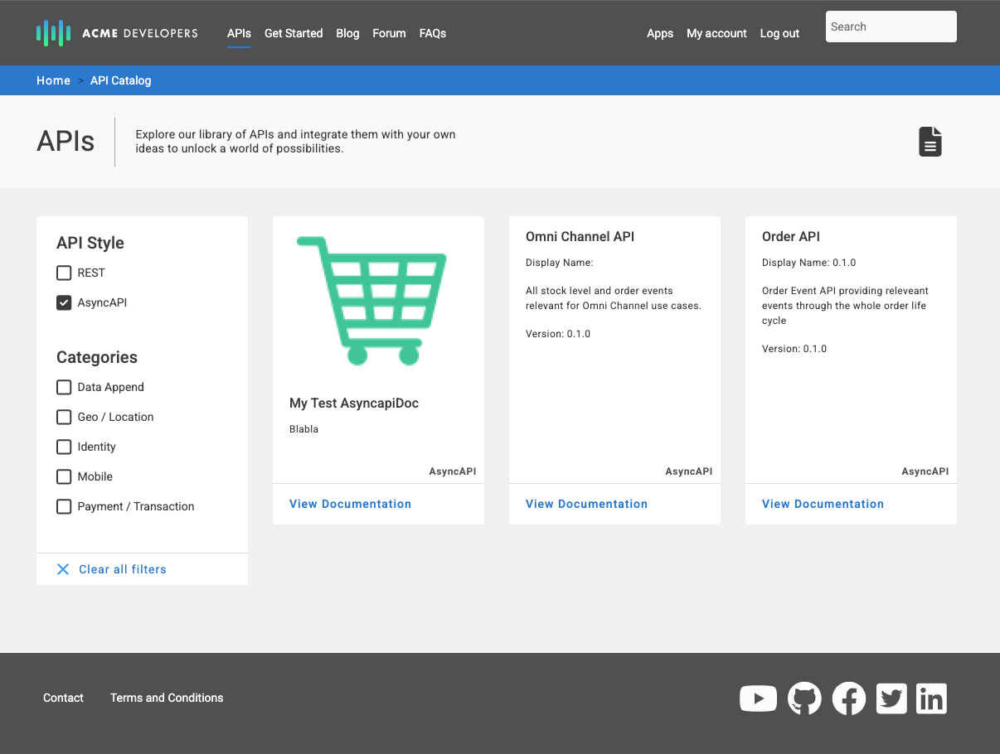

Create an App and Gain Access to an Event API
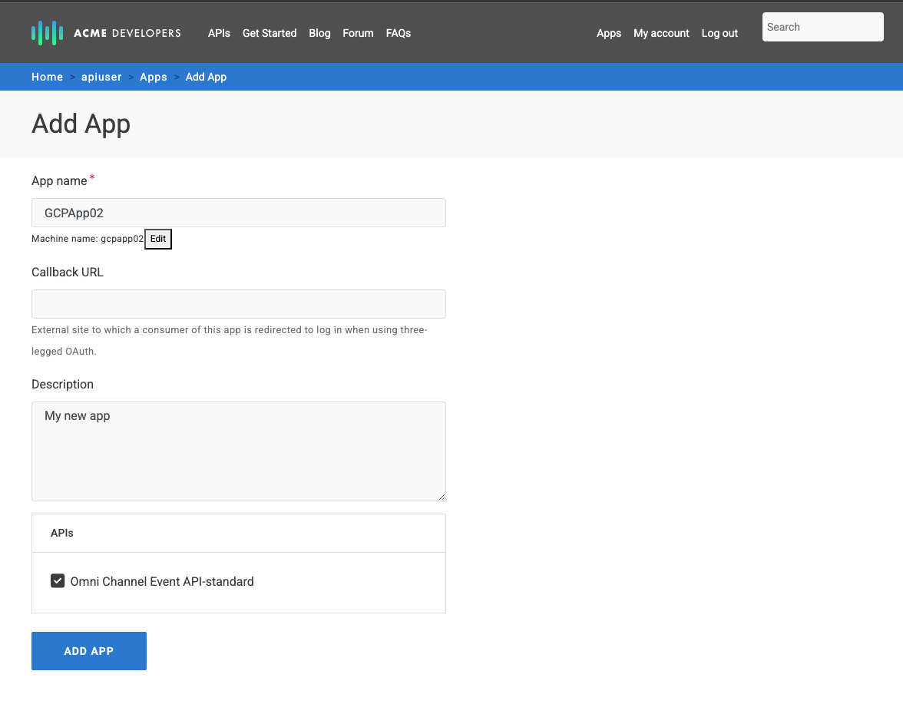
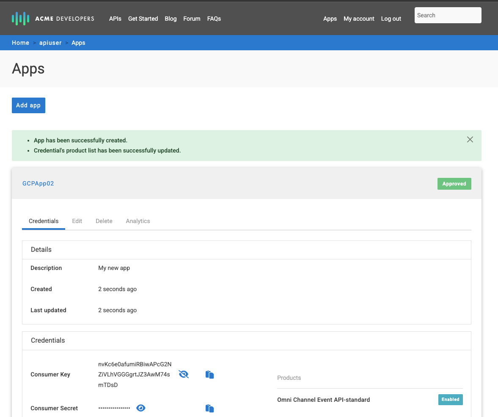
The Event API Product that we imported from Solace Event Portal is listed on API Product
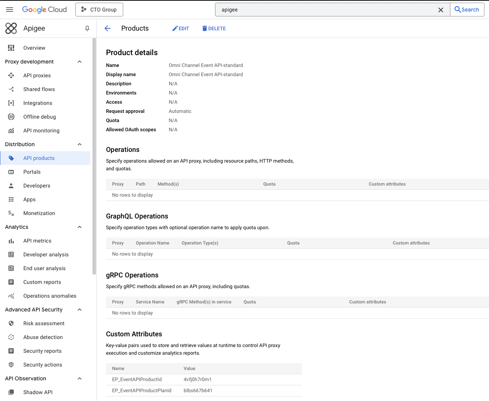
You need admin access to the Solace PubSub+ broker as you set up an OAuth provider in the broker in this section. This enables developers to use JWT issued by Apigee to connect to the broker.
Prerequisites to follow the MQTT connection steps:
- MQTTS (Secure MQTT) protocol must be enabled on the broker
- The Event API Product that you imported to Apigee must have MQTT included in the list of protocols.
Configure OAuth provider on PubSub+ Broker
Follow the steps on Configuring an Event Broker Service to Use OAuth Identity Provider Authorization
The OAuth Profile should look like the screenshot below, please note:
- Take note of the OAuth profile name you use, we will refer to this later as
< OAUTH_PROFILE_NAME > - OAuth client id and secret: use dummy values or leave empty. These values are not used when the broker assumes the "Resource Server" role.
- OAuth Role: must be set to "Resource Server"
- Issuer Identifier: provide a dummy HTTPS URL, this value is not validated in the configuraiton below
- JWKS Endpoint: set to
https://< API_GATEWAY_HOSTNAME >/oauth/jwks
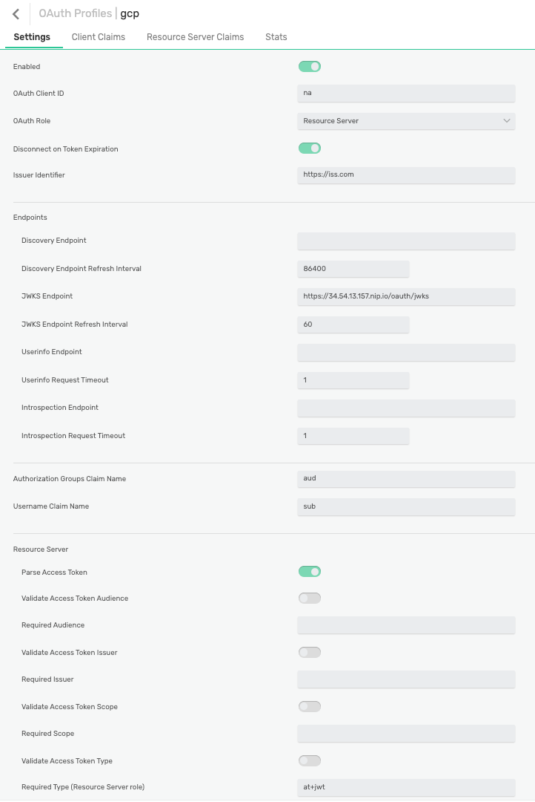
Connect to the Broker using MQTT
Obtain a JWT
Use the credentials associated with the app you created in the Developer Portal:
CLIENT_ID: the app's consumer keyCLIENT_SECRET: the app's consumer secret
Exchange your credentials for an access token:
curl --location 'https://<API_GATEWAY_HOSTNAME>/oauth/jwt' \
--header 'Content-Type: application/x-www-form-urlencoded' \
-u '<CLIENT_ID>:<CLIENT_SECRET>' \
--data-urlencode 'grant_type=client_credentials'
Save the value of the access_token element of the response. You need it for your establishing the MQTT connection, we refer to it later as TOKEN.
Gather Connection Information
You also need the broker URL and you might want to test that you can start a subscription (receive) once connected. All of this information is contained in the AsyncAPI spec available on the Developer Portal:
- In the Developer Portal, view the AsyncAPI spec you previously imported
- Choose an appropriate entry from the server section and take note of the URL, we refer to this as
MQTTS_URLbelow - Choose a "Receive" operation and take note of the channel information we refer to this as
MQTT_TOPICbelow
The screenshot below highlights examples for the values you need to take note of: 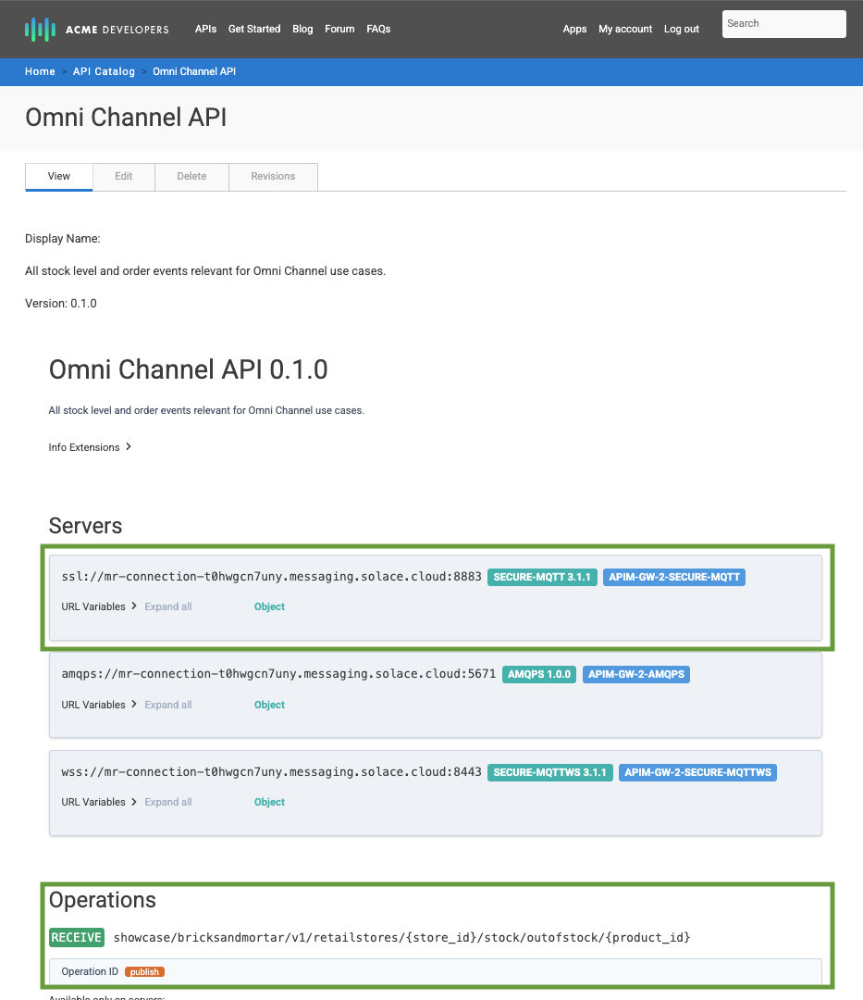
Connect using MQTTX
Start MQTTX (you can use another MQTT client that you prefer and are familiar with) and configure a new connection.
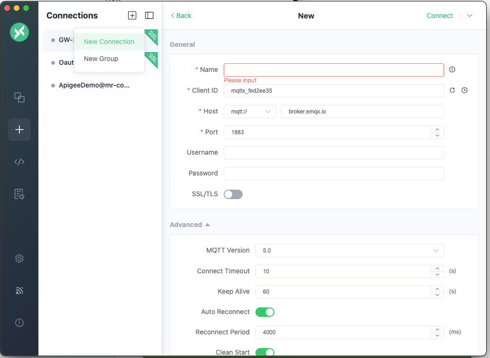
Use the following values in the connection details:
- Choose a name for the conneciton
- Select the
mqtts://option (if you use a secure MQTT port) - Host: use the hostname part of
MQTTS_URL - Port: use the port part of
MQTTS_URL - Username: this value is ignored, you can use anything you like e.g. "notused"
- Password: Concatenate
OAUTH~< OAUTH_PROFILE_NAME >~< TOKEN >
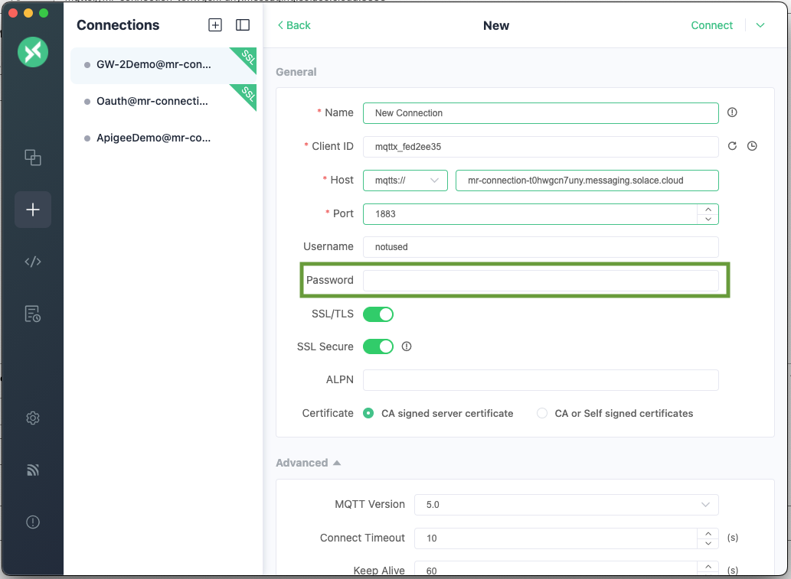
Subscribe to a Topic
Once connected add a subscription, use MQTT_TOPIC and replace any variables - enclosed in "{}""}" with suitable values or MQTT wildcards. 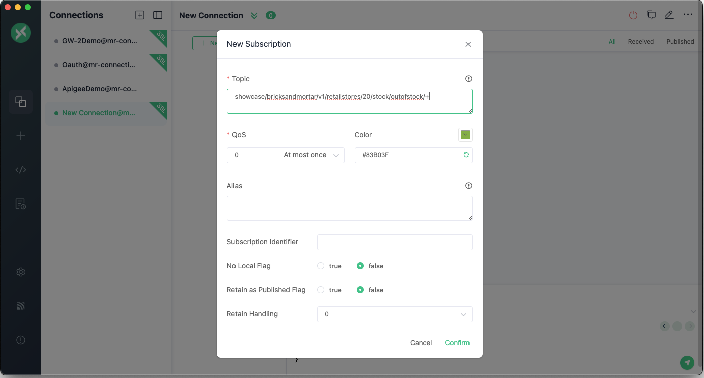
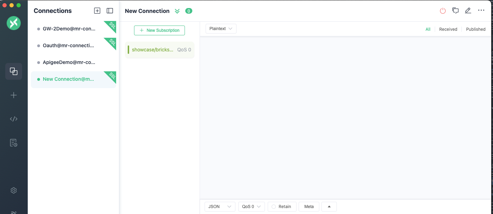
Congratulations, you now have a working custom integration between Google Apigee and Solace.
Thanks for participating in this codelab! Let us know what you thought in the Solace Community Forum! If you found any issues along the way we'd appreciate it if you'd raise them by clicking the Report a mistake button at the bottom left of this codelab.